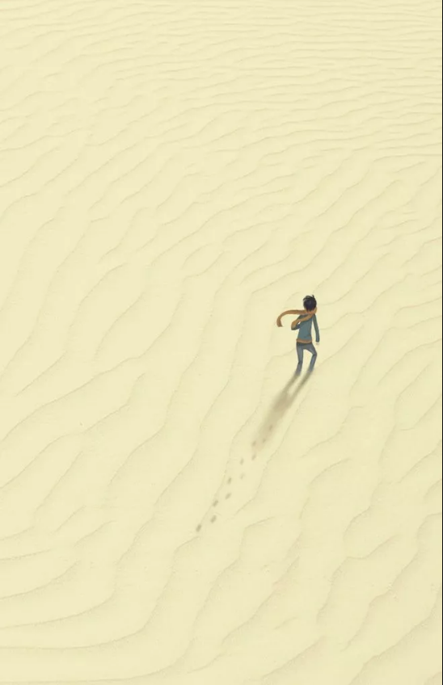
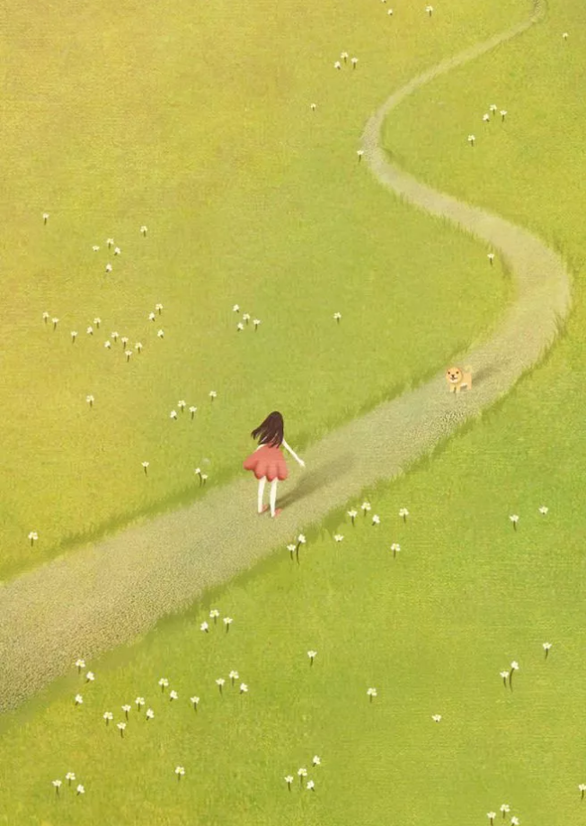
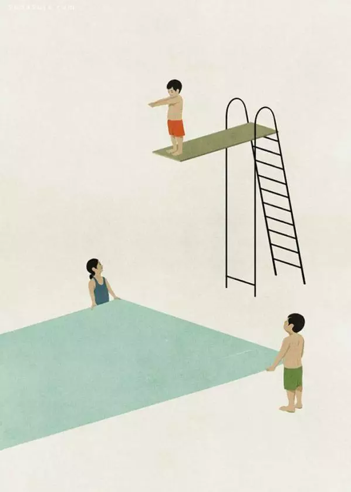
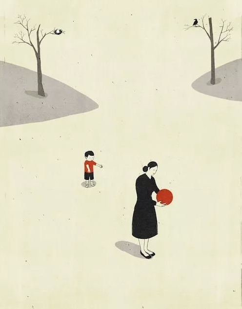

唯有亲身经历，才懂选择人生。
孩子从来到世界那一刻起，
就有爸爸妈妈爱，爷爷奶奶疼。
成长中，还有很多孩子什么也不用做，
也不让做，严重缺少生活经历。
仿佛是鸟笼里的鸟儿，飞不高，也飞不远。
往往是遇到事情便手足无措，不知处理。
一留学生因一盘西红柿炒蛋，
深夜打电话向妈妈求援。
更有甚者因生活低能，
无法适应大学生活，被迫退学……
事非经过不知难”。
没有经历过的事情，自然不知道。
见多识广，只有从小做过各种事情，
才知道过中滋味，才会帮助孩子成长。
这方面日本做得比较好。
一位在日本生活的中国母亲讲述她的孩子在日本幼儿园的经历：
日本幼儿园的孩子到了年长组，
成天不是练习打鼓，就是练习足球，那是真踢啊，
而且不停地有幼儿园之间的比赛，
田田的身上青一块、紫一块的，
但是体力和勇气都练出来了。
刚来日本时，田田的表现真让人汗颜。
日本的孩子一般从十三四岁开始，
才往上蹿个儿，之前比中国孩子矮很多，
田田在班里，那可是鹤立鸡群的“庞然大物”，
无奈实在是外强中干。
日本孩子光着脚在外面跑，
田田呢，榻榻米上有一点沙子，
就恨不得踮起脚走路。
有一次远足爬山，落在最后一个不算，
下山的时候，干脆由两个矮个子的日本孩子搀扶下山。
这怨不得孩子，
3岁的孩子根本没有过徒步爬山1小时的经验。
现在好了，去年在香格里拉，
在缺氧的环境下，徒步4个小时没有任何问题。
通过三年的幼儿园生活，
田田在音乐、美术、阅读等方面也有了长足的进步，
而这方面的收获却是经由综合教育方式获得的。
她的母亲在日历上标出的做便当的日子，
就是田田远足的日子，
数一数，一年下来不知道爬过多少次山，
看过多少次潮起潮落，
观察多少动物和植物，
除此之外，捡橡子、打年糕、开运动会、为社区演出、
宿泊、过园节、开发表会、拜寺庙、作品展，
反正是名堂多多。
总之，日本幼儿园的生命在于活动。
这些经历对一个孩子来说，
是何等重要，一生享用不尽。

从这一层面相比，我国的孩子算“幸福”，
从小被大人呵护着。但是，他们真的快乐幸福吗？
孩子从婴幼儿开始接受学习教育，
上学后学习是他们唯一的事情，
除了学习就是学习，
没有其他事情可做能做，
很少参加各类活动，仿佛成了学习的机器。
由于孩子缺少做各种事情的经历，
甚至不知道自己的喜好。
高考填报志愿有一个奇怪的现象，
孩子读了12年书，竟然不知道自己喜欢什么专业，
在填报志愿时大伤脑筋，
无奈之下，要么人云亦云，要么听从师长安排。
为什么孩子学习了12年，不知道自己的擅长，
因为这12年，他们一直在上课、写作业、考试……
除了这些，从未参加实践，经历各种事情，
缺少解决实际问题的能力，
也没有找到自己的兴趣爱好。
让孩子做各种事情，对孩子成长有很大的好处。
日本幼儿园的做法值得效仿，给我们以启示，
在正确的时机，让孩子做各种事情，参加各种活动。
经历的事情越多，孩子将来越美好。

多给孩子历练的机会，
多经历磨难，是为孩子未来蓄力。
在辽阔的亚马孙平原上，
生活着一种叫做雕鹰的雄鹰，
他有“飞行之王”的称号。
它的飞行时间之长、速度之快、动作之敏捷，
堪称鹰中之最，
被它发现的小动物，一般都难逃脱它的捕捉。
但谁能想到那壮丽的飞翔后面却蕴涵着滴血的悲壮？
当一只幼鹰出生后，
没享受几天舒服的日子，
就要经受母亲近似残酷的训练。
在母鹰的帮助下，
幼鹰没多久就能独立的飞翔，
但这只是第一步，
因为这种飞翔只比爬行好一点。
幼鹰需要成百上千次的训练，
否则，就不能获得母亲口中的食物。
第二步，母鹰把幼鹰带到高处，
或树边或悬崖上，然后把它们摔下去，
有的幼鹰因胆怯而被母亲活活摔死。
但母鹰不会因此而停止对他们的训练，
母鹰深知：不经过这样的训练，
孩子们就不能飞上高远的蓝天，
即使能，也难以捕捉到食物，
最终也难逃饿死的命运。
第三步则充满着残酷和恐怕，
那些被母亲推下悬崖而能胜利飞翔的幼鹰将面临着最后的，
也是最关键、最艰难的考验，
母鹰会残忍地折断它们仍在生长发育的翅膀的大部分骨骼，
然后再次从高处推下，
有很多幼鹰就是在这时成为飞翔悲壮的祭品，
但母鹰同样不会停止这血淋淋的训练，
因为它眼中虽然有痛苦的泪水，
但同时也在构筑着孩子们生命的蓝天。
有的猎人动了恻隐之心，
偷偷地把一些还没来得及被母鹰折断翅膀的幼鹰带回家里喂养。
但后来猎人发现那被喂养长大的雕鹰最多飞到房屋那么高便要落下来，
而它们那两米多长的翅膀便成为了一辈子的累赘。
原来，母鹰残忍地折断幼鹰翅膀中的大部分骨骼，
是决定幼鹰未来能否在广袤的天空中自由翱翔的关键所在。
雕鹰翅膀骨骼的再生能力很强，
只要在被折断的地方充血，不久便能痊愈，
而痊愈后翅膀则似神话中的凤凰涅槃一般，
将能长得更加强健有力。
如果不这样，雕鹰也就失去了这仅有的一个机会，
将永远与蓝天无缘。
没有谁能帮助雕鹰飞翔，除了它自己。
雕鹰如此，何况人呢？
不经风雨，怎见彩虹。
我们每个人都拥有自己辽阔而美丽的蓝天，
也都拥有一双为蓝天而生的翅膀
——便是历练、意志、勇气和希望。
只有不断经历事情，不断历练，
最终才能翱翔蓝天。
作为父母要真正为孩子的未来着想，
就要学雕鹰那样，
从小让孩子经历一些磨难，
做各种各样的事情，
增加阅历，丰富积淀，
从中不仅能让孩子找到自己的喜好，
还能磨练出伴随孩子一生的顽强意志。
